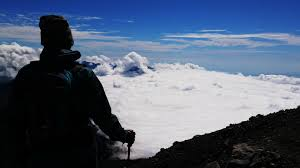
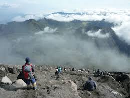
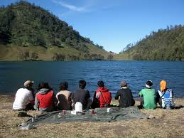

WISATA ALAM GUNUNG SEMERU
 Apr 5, 2015Views : 10,748,910
Apr 5, 2015Views : 10,748,910
bertemu lagi dengan kami, kali ini kami ingin berbagi informasi seputar wisata alam yang ada di pulau jawa yang paling terkenal, untuk anak petualang sudah tidak asing lagi dengan Gunung Semeru ini.
Gunung Semeru atau dikenal juga sebagai Mahameru adalah gunung tertinggi di pulau Jawa dan merupakan salah satu gunung berapi teraktif yang ada di Indonesia. Salah satu keunikan dari gunung ini ialah kawahnya selalu mengeluarkan letupan secara berkala setiap 15 – 20 menit sekali, menimbulkan kepulan asap abu bahkan kadang – kadang bercampur batu kerikil ke udara. Pemandangan yang ditimbulkan sangatlah spektakuler. Untuk dapat mendaki ke puncak Mahameru diperlukan persiapan fisik dan logistik yang matang, juga pengetahuan pendakian yang memadai, bayarannya ialah anda akan mendapatkan pemandangan yang spektakuler dan pengalaman yang tak akan terlupakan.
Apabila anda sudah yakin akan melakukan pendakian, sebaiknya anda mencari informasi sekaligus mendaftar ke Kantor Taman Nasional Bromo Tengger Semeru, Jl. Raden Intan No. 6, PO Box 54, Malang, Jawa Timur, Indonesia. Atau untuk yang sudah berpengalaman bisa mendaftar langsung ke pos penjagaan yang ada di Ranupani. Sebagai catatan gunung ini pada waktu-waktu tertentu sering ditutup untuk pendakian karena alasan keselamatan.

Rute Menuju Gunung Semeru.
Ada beberapa alternatif rute untuk mencapai kaki gunung Semeru. Yang paling umum dan paling sering digunakan oleh para pendaki ialah rute melalui Malang – Tumpang. Dari terminal Arjosari di kota Malang anda bisa menaiki minibus menuju Tumpang, perjalanan lalu dilanjutkan dengan menaiki kendaraan 4 WD menuju Ngadas. Apabila ingin lebih hemat anda bisa menumpang truk milik petani setempat untuk menuju Ngadas. Harga tiket masuk sekitar Rp. 50.000.
MOUNT SEMERU TREKKING (3676 Mdpl)
Untuk anda yang ingin berpetualang di Gunung Semeru & berdiri di puncak tertinggi di pulau Jawa tetapi tidak ingin terlalu bersusah payah dengan beban yang berat serta perencanaan & pengetahuan alam bebas yang banyak, kami menyediakan paket pendakian + logistik, guide dan porter yang akan membantu selama pendakian anda.
Ikuti paket trekking Gunung Semeru kami dengan rincian perjalanan & fasilitas sebagai berikut:
Hari Ke I
SURABAYA – MALANG
Peserta dijemput dari Bandara Juanda menuju Malang. Lalu Cek In untuk menginap 1 malam di kota ini (Hotel). Dan Sisa waktu yang ada akan digunakan untuk beristirahat atau acara bebas. (Meals: Lunch + Dinner)
Hari Ke II
MALANG – TUMPANG – RANUPANI – RANU KUMBOLO
Pagi hari setelah sarapan, peserta berangkat ke Desa Tumpang dan dilanjutkan hingga ke Desa Ranu Pani dengan menggunakan Jeep 4 Wheel-drive. Setelah tiba, pendakian hari pertama dimulai hingga Ranu Kumbolo. Dan berkemah disini. (Meals: Breakfast + Lunch + Dinner)
Hari Ke III
RANU KUMBOLO – KALIMATI
Setelah sarapan pagi, Pendakian dilanjutkan hingga ke Pos Kalimati. Makan siang, istirahat dan bersantai sambil menikmati pemandangan disekitarnya. Peserta bermalam di sini. (Meals: Breakfast + Lunch + Dinner)
Hari Ke IV
KALIMATI – PUNCAK SEMERU – RANU KUMBOLO
Pendakian ke Puncak Mahameru (3676 Mdpl) dimulai pada Pukul 03.00 dini hari. Hal ini dilakukan agar peserta dapat menyaksikan Sunrise (matahari terbit). Setelah mengambil foto dan beristirahat, peserta kemudian turun ke Basecamp (Kalimati) untuk sarapan. Setelah itu, Dilanjutkan dengan perjalanan turun kembali ke Ranukumbolo untuk berkemah satu malam disini. (Meals: Breakfast + Lunch + Dinner)
Hari Ke V
RANU KUMBOLO – RANU PANI – BROMO
Pagi-pagi setelah sarapan, peserta melanjutkan perjalanan turun hingga ke Desa Ranu Pani. Dari Desa ini, perjalanan dilanjutkan menuju Bromo dengan menggunakan Jeep 4 Wheel-drive kesebuah hotel di Bromo untuk beristirahat dan bersantai. (Meals: Breakfast + Lunch + Dinner)
Hari Ke VI
MALANG – SURABAYA – BANDARA JUANDA
Dipagi hari, dengan Jeep 4 wheel-drive peserta akan diantar hingga ke puncak Gunung Pananjakan (2.770 M dpl) untuk melihat-lihat pemandangan spektakuler matahari terbit dan hamparan pasir di Bromo. Kemudian kembali ke hotel untuk sarapan. Setelah itu, peserta akan diantar menuju Bandara Juanda Surabaya.
(Meals: Breakfast + Lunch + Dinner)

Biaya Pendakian 6 Hari 5 Malam : Rp. 4.250.000 /Peserta (Minimal 6 Peserta)
Fasilitas :
• Camping Gear (Tenda Doom, Matras, Sleeping Bag, Peralatan Masak)
• Tiket Masuk Taman Nasional Bromo Tengger Semeru (TNBTS)
• Penginapan 1 Malam di Malang & di Bromo
• Transportasi (AC) Bandara Juanda – Tumpang & Bromo – Bandara Juanda
• 4 Wheel Drive Jeep (Tumpang – Ranu Pane & Ranu Pane – Bromo)
• 3X Makan Per Hari (Pagi, Siang, Malam) + Snack
• Guide, Porter, P3K & Asuransi
Peralatan yang perlu dibawa Peserta :
• Daypack
• Pakaian Pribadi + Cadangan; Baju Hangat (Sweeter Dll) & Celana Panjang (Secukupnya)
• Kamera / Handycam
• Peralatan Mandi & Ibadah
• Raincoat / Jas Hujan
• Sepatu & Sendal Trekking (Sepatu yang kuat dan tidak terlalu sempit)
• Kaos Kaki Tebal, Sarung Tangan, Sarung Kepala & Topi lapangan
• Kacamata Hitam & Sunblock
• Makanan dan Minuman Tambahan Pribadi
• Obat-obatan Pribadi (Yang direkomendasikan Dokter atau Rumah Sakit) & Tiger Balm / Obat semprot otot (untuk nyeri otot)
• Tidak dianjurkan untuk mendaki bagi Peserta yang memiliki penyakit Sesak Napas, Jantung Koroner, Epilepsi, Darah Tinggi, Indikasi Vertigo dan penyakit berbahaya lainnya